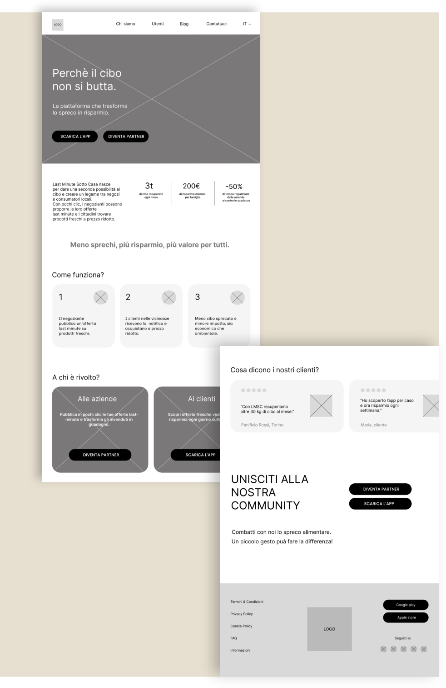

Landing page redesign
Last Minute Sotto Casa
Analisi e redesign della landing page di una piattaforma antispreco. Focus su messaggio, gerarchia visiva, doppio target e conversione.

Una landing più diretta, modulare e orientata all’azione.
La pagina originale comunicava un servizio utile, ma con una struttura densa e poco bilanciata. Il valore per utenti e negozianti non risultava abbastanza distinto.
La nuova proposta mette in sequenza messaggio, funzionamento, benefici per target, testimonianze e CTA finale, rendendo il percorso più leggibile.

01 · Analisi
Individuare cosa blocca la comprensione.
Ho separato punti di forza e debolezze: messaggio chiaro, ma struttura affollata, target poco distinti e assenza di CTA distribuite lungo il percorso.

02 · Wireframe
Ricostruire il percorso della pagina.
Il wireframe ridisegna la landing come una sequenza guidata: hero con doppia CTA, spiegazione del servizio, benefici distinti e chiusura orientata alla conversione.

03 · Visual refresh
Mantenere il brand, renderlo più caldo.
Ho mantenuto giallo e nero come colori identitari e introdotto l’arancione per dare energia, ritmo e maggiore riconoscibilità alle sezioni.
Risultato.
Il redesign rende il servizio più leggibile e aiuta l’utente a capire subito cosa può fare: scaricare l’app, diventare partner o entrare nella community.